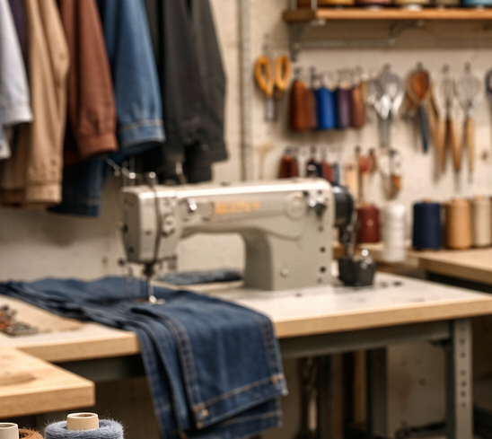

YAPEROSHOP
YAPEROSHOP gaur egungo arropa-denda bat da, emakume eta gizonentzako jantzien aukeraketa zaindua eskaintzen duena, estiloa, erosotasuna eta prezio ona konbinatuz.

YAPEROSHOP sortu zen gazteen artean modaren munduan dagoen hutsune bat ikusi genuelako. Gaur egungo merkatuan, askotan zaila da estilo pertsonala, kalitatea eta prezio eskuragarria batera aurkitzea, eta horri erantzun nahi izan diogu gure proiektuarekin. Horregatik, gure katalogoa etengabe berritzen dugu, joera berriei adi egonez eta bezeroen gustuak kontuan hartuz, betiere proposamen fresko eta eguneratuak eskainiz.
Gure enpresaren oinarrietako bat gertutasuna da. Bezeroekin harreman zuzena izatea funtsezkotzat jotzen dugu, haien iritziak eta beharrak entzunez gure zerbitzua hobetzeko. Ez gara soilik arropa saltzen duen denda bat; komunitate bat sortzea da gure helburua, non estiloa adierazteko askatasuna eta norberaren identitatea baloratuko diren. Horregatik, arreta pertsonalizatua eta esperientzia atsegina eskaintzen saiatzen gara, bai dendan bertan bai gure webgunearen bidez.
Etorkizunari begira, YAPEROSHOP hazten jarraitzea da gure asmo nagusia, betiere gure balioei leial izanik. Proiektu hau ikaskuntza-prozesu etengabe gisa ulertzen dugu, non ekintzailetza, erantzukizuna eta berrikuntza eskutik doazen. Gazte ekintzaile gisa, erronkei aurre egiteko prest gaude, gure marka sendotzeko eta arropa-denda erreferente bihurtzeko, kalitatean, konfiantzan eta konpromisoan oinarrituta.